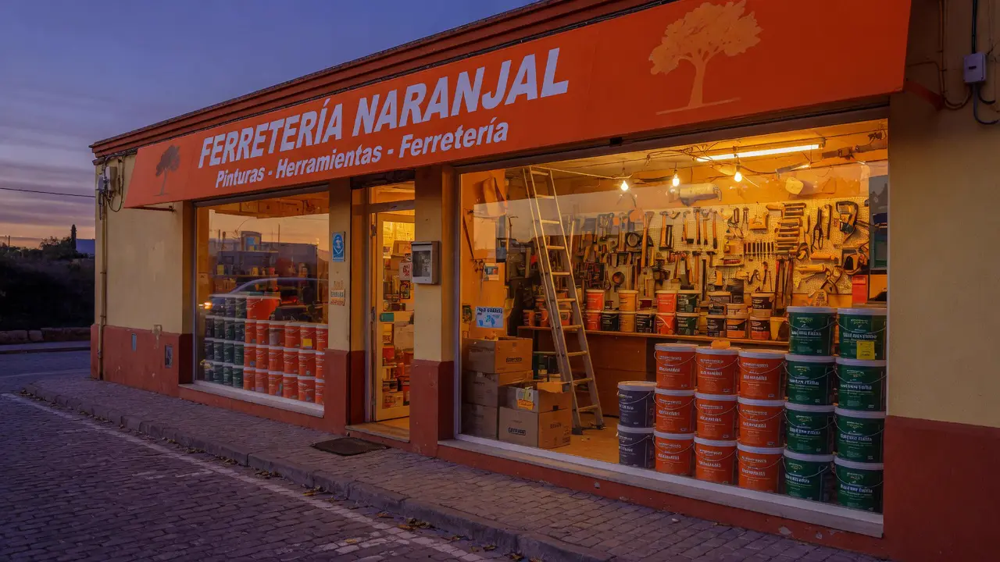

Mostrador
Fijación, pintura, herramientas y recambios. El catálogo se edita en el panel y se guarda en este navegador.
v0.2.2 · Early Access · sin base de datos
Tienda de barrio con mostrador, corte de llaves y cuadrilla para aires, piscinas y toldos.

Fijación, pintura, herramientas y recambios. El catálogo se edita en el panel y se guarda en este navegador.
Montaje y mantenimiento de aires, piscinas y toldos. Presupuesto en tienda.
Lunes a viernes mañana y tarde. Sábados solo mañana. Domingos cerrado.